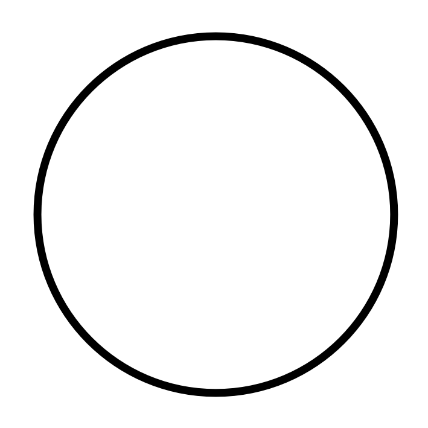
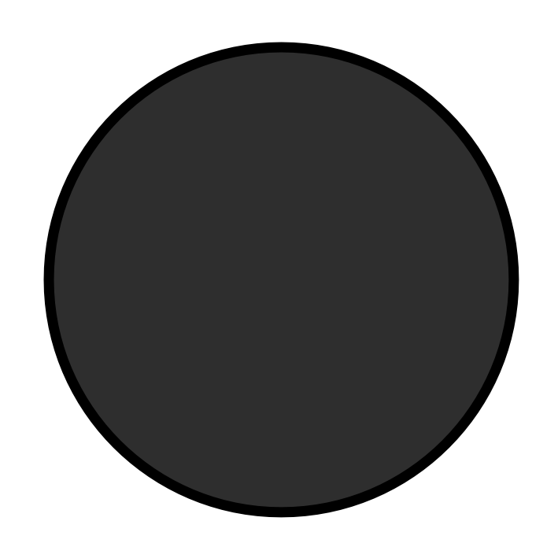

<!DOCTYPE html>
<html>
  <head>
    <title>Methodik der empirischen Forschung</title>
    <script src="jspsych-6.3.0/jspsych.js"></script>
    <script src="jspsych-6.3.0/plugins/jspsych-html-keyboard-response.js"></script>
    <script src="jspsych-6.3.0/plugins/jspsych-image-keyboard-response.js"></script>
    <script src="jspsych-6.3.0/plugins/jspsych-preload.js"></script>
    <script src="jspsych-6.3.0/plugins/jspsych-serial-reaction-time.js"></script>
    <link href="jspsych-6.3.0/css/jspsych.css" rel="stylesheet" type="text/css">
  </head>
  <body></body>

<script>
var timeline = [];

/*TODO:
- Frage zum Alter und Geschlecht
- Willkommen+Aufgabe anpassen mit den später gezeigten Kästchen
- korrekte Reihenfolge implementieren
- Zuordnung zu einer der 3 Gruppen
- Musik, Störgeräusche und blank den Gruppen zuordnen
- Datenbank zum Speichern der Ergebnisse
*/

/*Willkommen + Aufgabe*/
var welcome = {
    type: "html-keyboard-response",
    stimulus: "Willkommen zu diesem Experiment. Bitte beantworten Sie die folgenden Fragen und klicken Sie dann auf weiter."

  };
  timeline.push(welcome);

  /*Erklärung*/
  var instructions = {
    type: "html-keyboard-response",
    stimulus: `
      <p>Bei diesem Experiment werden 4 weiße Kreise auf dem Bildschirm angezeigt.</p><p>Bitte legen Sie Ihre Finger auf die Tasten <strong>Y,X</strong> und <strong>N,M,</strong> diese repräsentieren je einen der Kreise</p>
      <p>Wird aus einem weißen Kreis ein <strong>dunkel-grauer Kreis</strong>, so drücken Sie bitte so schnell Sie können die dazugehörige Taste.</p>
      <p><strong>Beispiel:</strong></p>
      <div style='width: 1000px; height: 400px;'>
        <div style='float: left;'></img></div>
        <div style='float: left;'></img></div>
        <div style='float: left;'></img>
          <p class='small'><strong>Drücken Sie N</strong></p></div>
        <div style='float: left;'></img></div>
      </div>
      <br>
      <p>Drücken Sie eine beliebige Taste um anzufangen.</p>
    `,
    post_trial_gap: 2000
  };
  timeline.push(instructions);


  /* test trials */
  var trial = {
  type: 'serial-reaction-time',
  grid: [[1,1,1,1]],
  target: jsPsych.timelineVariable('target'),
  choices: [['y','x','n','m']],
  data: {
        task: 'response',
        correct_response: jsPsych.timelineVariable('correct_response')
      },
      on_finish: function(data){
        data.correct = jsPsych.pluginAPI.compareKeys(data.response, data.correct_response);
      }
  }
  
    var test_stimuli = [
      {target: [0,0], correct_response: 'y'},
      {target: [0,1], correct_response: 'x'},
      {target: [0,2], correct_response: 'n'},
      {target: [0,3], correct_response: 'm'}
    ];

    var test_procedure = {
      timeline: [trial],
      timeline_variables: test_stimuli,
      repetitions: 5,
      //randomize_order: true
    }
    timeline.push(test_procedure);

    /* define debrief */
    var debrief_block = {
      type: "html-keyboard-response",
      stimulus: function() {

        var trials = jsPsych.data.get().filter({task: 'response'});
        console.log(trials.count());
        var correct_trials = trials.filter({correct: true});
        var accuracy = Math.round(correct_trials.count() / trials.count() * 100);
        var rt = Math.round(correct_trials.select('rt').mean());

        return `<p>Sie haben in ${accuracy}% der Fälle die korrekte Taste gedrückt.</p>
          <p>Ihre durchschnittliche Reaktionszeit betrug ${rt}ms.</p>
          <p>Drücken Sie eine beliebige Taste um das Experiment abzuschließen. Vielen Dank!</p>`;

      }
    };
    timeline.push(debrief_block);

    /* start the experiment */
    jsPsych.init({
      timeline: timeline,
      on_finish: function() {
        jsPsych.data.displayData();
      }
    });
  </script>
</html>
